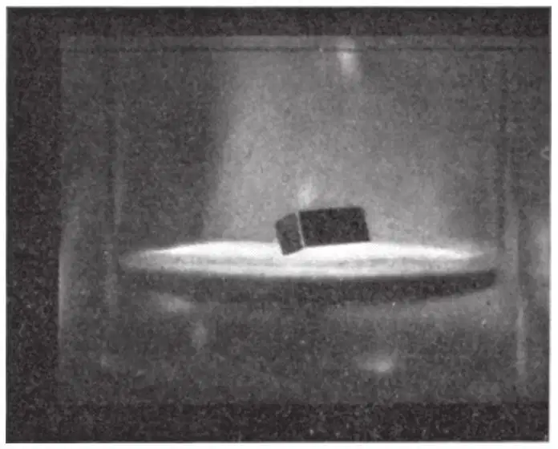

中文
中文V. Arkadiev
Editor’s Note
Russian physicist V. Arkadiev here reports his observation of a levitation phenomenon achieved with the aid of a superconductor. He notes that a diamagnetic substance (in essence, a conventionally “non-magnetic” one) pulled toward a magnetic surface by gravity can hover over it. For example, a linear magnet one centimetre long could hover about one centimetre above a copper sphere some 20 metres in diameter. To prevent a magnet falling onto a diamagnetic sphere the size of the Earth, however, requires a superconductor beneath the magnet. Arkadiev demonstrates the effect with a small magnet hovering over a concave lead disk held over liquid helium. Today, with liquid nitrogen and high-temperature superconductors, Arkadiev’s levitation is a common trick in the physics classroom. 中文
BY assuming that diamagnetic bodies are pushed out of a magnetic field, it may be shown that a diamagnetic particle attracted to a magnet by gravitational forces will take up a position in space in the equatorial plane of the straight magnet at a certain distance from the latter. The “satellite” can vibrate elastically about the point of equilibrium, describing a certain curve. The period of vibration in the radial and meridional directions is close to the period of the Kepler rotation of a magnetically indifferent satellite about a body of the same mass. Several identical particles arrange themselves around the magnet. Such a combination of bodies is in the nature of a static planetary system as distinct from the Kepler dynamic planetary system. 中文
However, systems thus formed can only be of small dimensions. The orbit of the outermost bodies can be no larger than several metres, and in the case of small magnetized iron meteorites amounts to several millimetres. 中文
Computation shows that in space a straight magnet keeps at a certain distance from a large diamagnetic body. Thus a magnet 1 cm. long will take up a position at a distance of 1 cm. from the surface of a copper sphere about 20 m. in diameter. Diameters of 300 m. and 3,000 m. respectively would be necessary for bismuth and carbon spheres. To prevent a magnet falling on to a diamagnetic sphere the size of the Earth, the sphere must consist of the strongest diamagnetic substance, or be a superconductor. In this case, however, it is sufficient that the superconductor is placed only under the magnet itself. 中文
The approach of a magnet to the surface of a superconductive semispace is accompanied by the appearance of the magnetic image of this magnet within the superconductor. In the case of a common steel magnet, this may lead to demagnetization, while a ferro-nickel-aluminium steel magnet will be repelled from the horizontal surface of the semispace with such force that it will hang suspended (“float”) over the latter without any support. Thus one of the cases of a static planetary system may be reproduced in the laboratory. The Earth, screened by a superconductor in the neighbourhood of a magnet, repels the latter with the same force as it is attracted owing to universal gravitation. The accompanying photograph shows a magnet, 4 mm. × 4 mm. × 10 mm. in dimensions, floating above a concave lead disk 40 mm. in diameter in a Dewar vessel over liquid helium. 中文

The experimental test of these views was possible through the kindness of Prof. P. L. Kapitza, in the Institute of Physical Problems, Moscow. 中文
The lower the coercive force of the magnet, the smaller the magnet itself must be. Carbon steel magnets, for example, can “float” when they have the dimensions of 0.5 mm. × 9 mm. By scattering microscopically small magnets over the surface of a body, it is possible to reveal superconductive inclusions directly, since the magnetic particles will roll to the spots where there is no superconductivity. 中文
(160, 330; 1947)
V. Arkadiev: Maxwell Laboratory, Physical Department, University, Moscow, March 25.